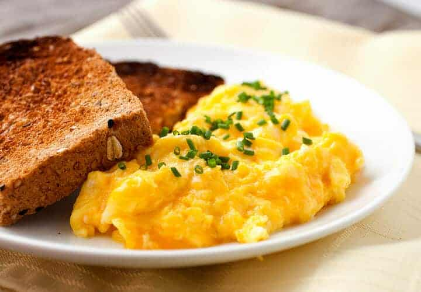

Cheesy Eggs

Description:
Make savory Scrambled Eggs with Cheese, and Corned Beef Hash - A satisfying meal
Ingredients:
- Eggs
- Butter
- Milk
- Salt
- Pepper
- Minced Garlic
- Chives
- American Cheese slices
Steps:
- Pour 1-3 ounces of milk in a bowl
- Break egg shells with a fork and empty entire egg minus the shell into bowl
- Repeat once or twice for a total of three eggs!
- Whisk with a fork or whisker until eggs are properly beaten
- Cut a tablespoon of butter from stick
- Turn on stove to medium low and put tablespoon of butter onto pan
- Melt the butter and spread it evenly
- Add salt and pepper into bowl and empty the bowl onto the stove and wait until semi-solid
- Cook and scramble until properly cooked
- Add chives, minced garlic, and cheese on top and mix again
- Done - empty onto plate - turn off stove
- Optional - add corned beef hash on the side from Mary's Kitchen
- For Corned Beef Hash cook on medium high on small stove pan, no oil needed, stir as necessary until crispy all around, turn off stove
Home